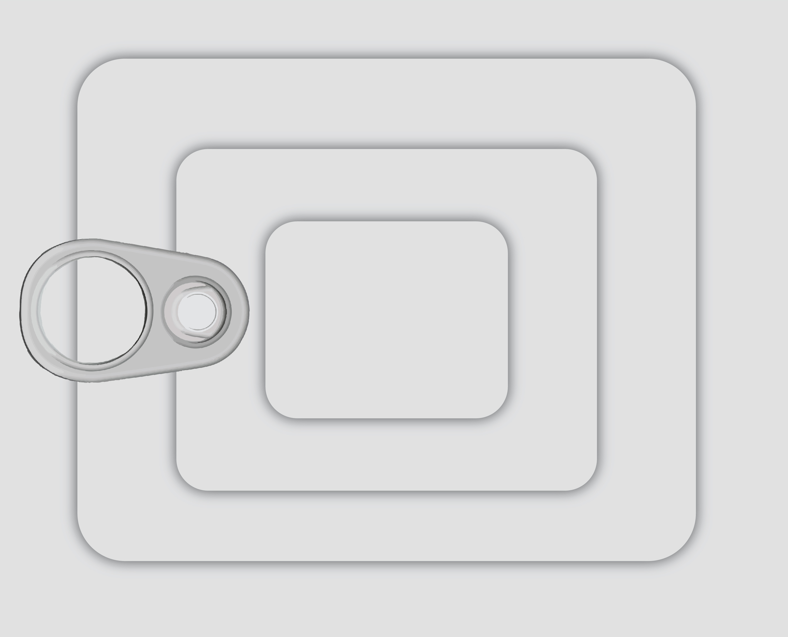
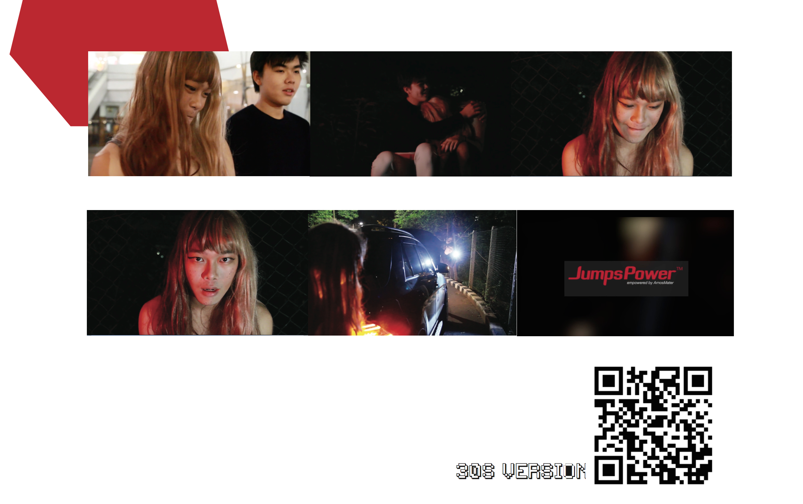
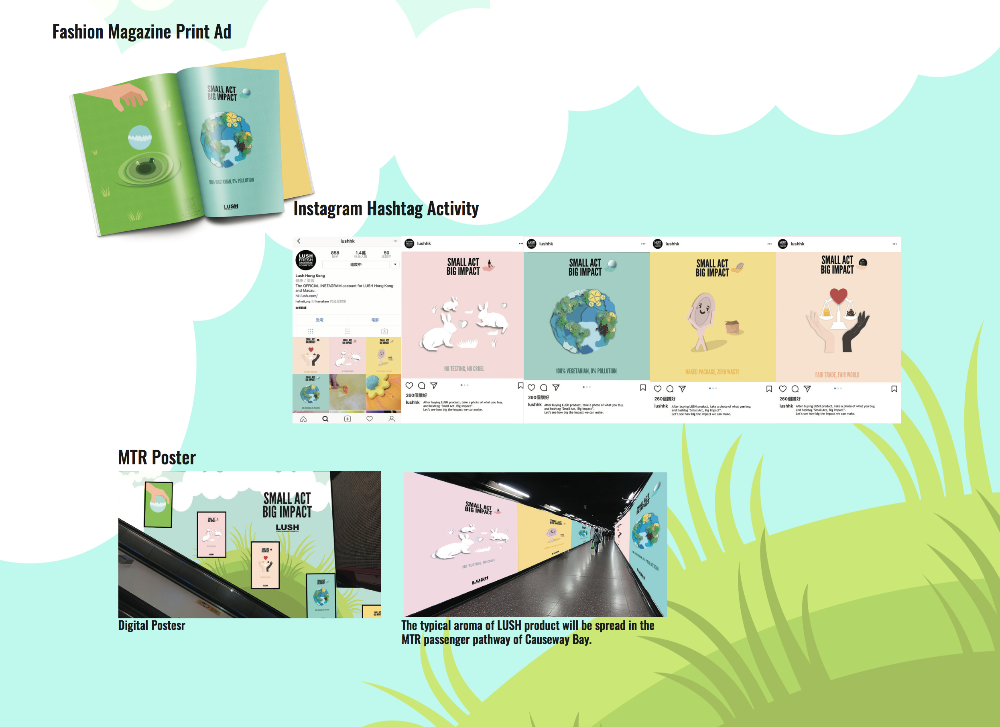

Breif Introduction




I am using Tin as the cover page. Without packaging, this Tin is boring, nothing special, no one is willing to buy it home. It’s a Tin only. What I want to present here is, I am nothing special only if you flashily take a look on me. Open it, ponder carefully, this Tin will give you another thought. After you open this Tin, you can discover I got a lot of different pieces. These pieces can create so many beautiful pictures in different combination. You can check my FULL VERSION. Hope you enjoy both!
In our life, most of the advertisement campaign media will be poster, TVC, activities. For most of the Hong Konger, they need to work at 8a.m to 7p.m, not included OT. The time that they travelling is part of the time can let them to do some relax. I don’t think they want to use their time to read the poster or TVC. I hope I can create the advertising that can cause their curious, and to look around. Like using aroma, 3D projection, or even though asking the model to walk a catwalk in the MTR tunnel in a reverse way.
Thought this campaign, we hope to promote GAP has design different clothes and shoes that are specifically with for every generation..
As Hong Kong still have quite a lot of people do not know JumpsPower or even do not know there is a mini-jump starter invented. So, though this project I hope I can let Jump- sPower replace the traditional jump start way and let more people know this now tecnology.
It is almost Mother’s Day while doing this assignment, so, I use Mother’s day as my video theme. In most of the days of a year, we ignore our mum very often. Only few days, like mother’s day, we will think of mum. Can you imagine one day, your mum no longer live with you or stay with you, will you recall some of the words she said? Will you regret that you never listen to her words?
To convey the message “Less is more”, and tell the audience that, LUSH is an environmental friendly brand